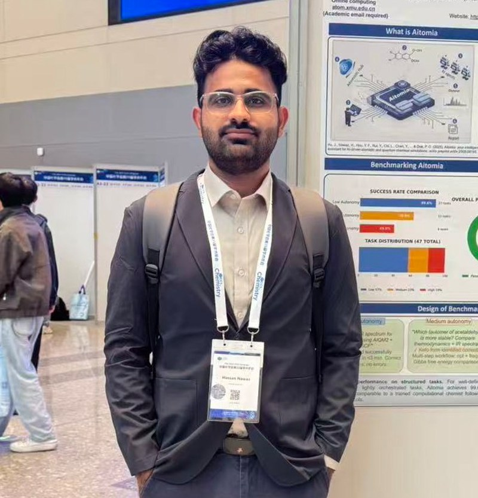

Hassan Nawaz
PhD Student, Chemical & Biomolecular Engineering, Hong Kong University of Science and Technology (HKUST) — advised by Prof. Hanyu Gao. Formerly M.Sc. Physical Chemistry at Xiamen University, advised by Prof. Pavlo O. Dral.
My work applies machine learning and data science techniques to problems in chemical and materials engineering. I'm a PhD student at HKUST, advised by Prof. Hanyu Gao, building on my Master's research at Xiamen University advised by Prof. Pavlo O. Dral — where I worked on AI-enhanced computational chemistry: autonomous simulation platforms, LLM agents for chemistry, and machine learning interatomic potentials developed and benchmarked within the MLatom and Aitomia ecosystems.
I'm originally from Pakistan, completed my B.Sc. in Analytical Chemistry at the University of Agriculture, Faisalabad, and I'm now based in Hong Kong.
Contact: hnawaz@connect.ust.hk

Vita
PhD in Chemical and Biomolecular Engineering In Progress
Hong Kong University of Science and Technology, Hong Kong
Research focus: machine learning and AI for chemical and materials engineering.
M.Sc. in Physical Chemistry GPA 3.9/4
Xiamen University, China
B.Sc. in Analytical Chemistry GPA 3.71/4
University of Agriculture, Faisalabad, Pakistan
Work Experience
Research Intern, Central Hi-Tech Lab
Feb 2023 – Jul 2023University of Agriculture, Faisalabad · Advisors: Raja Adil Sarfraz, Raziya Nadeem, Fazil Shah
- Development of novel methodologies for the identification of adulterants in milk.
- Hands-on training on Scanning Electron Microscope (SEM), High-Performance Liquid Chromatography (HPLC), Gas Chromatography (GC), Light Microscopy (LM), Atomic Absorption Spectroscopy (AAS), UV-visible spectroscopy, and Flame Photometry (FP).
Awards & Scholarships
-
Apr 2026
HKUST RedBird PhD Recruitment Award 2026-27
Awarded during the PhD recruitment process at the Hong Kong University of Science and Technology.
-
Feb 2026
Postgraduate Scholarship at HKUST
In support of doctoral studies in Chemical and Biomolecular Engineering.
-
Sep 2024
Chinese Government Scholarship
In support of Master's studies at Xiamen University, China.
-
Sep 2021
Ehsas Undergraduate Merit Base Scholarship
In support of undergraduate studies at the University of Agriculture, Faisalabad, Pakistan.
-
Apr 2018
Higher Secondary Education Bright Student Scholarship
Awarded for academic performance in higher secondary education.
Professional Memberships
-
Dec 2025
American Chemical Society (ACS)
Member since December 2025.
-
Mar 2026
Chinese Chemical Society (CCS)
Member since March 2026.
Languages & Tools
Languages
Computer
Working together
I'm always glad to connect with researchers and groups working on machine learning for chemistry and materials, molecular simulation, or AI agents for science.
Prof. Ireneusz Grabowski & Dr. Szymon Śmiga
Nicolaus Copernicus University, Toruń, Poland
Development of machine learning interatomic potentials aimed at surpassing standard DFT accuracy.
Get in touch
Open to research collaborations, questions about the work on this site, or conversations about AI for chemistry and materials. The fastest way to reach me is email.